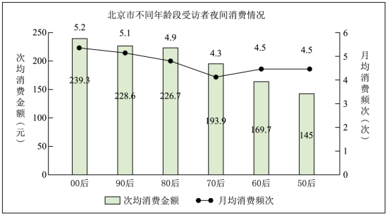

真题 · 非连续文本阅读
文化旅游与夜间消费
四则材料说明文旅融合、数字旅游、夜间经济与不同年龄段的夜间消费。
导读
文本出处：2021年天津卷信息类文本阅读。前三则材料取材于司若主编《中国文旅产业发展报告（2020）》，材料四取材于《2019年北京市夜间消费调查报告》。
内容脉络：材料一：说明文化、科技与旅游融合的方式和消费需求。 材料二：以景区服务和动物园直播介绍数字文旅新形态。 材料三：介绍夜间经济的发展、政策与评价意义。 材料四：图示不同年龄段受访者的夜间消费情况。
阅读重点：结合题意辨明概念的范围、条件和材料之间的关系，并以原文与图示数据检验判断。
原文与随文研读
原文按结构分节；随文内容可定位至对应段落。
材料一：说明文化、科技与旅游融合的方式和消费需求。
中国文旅产业在高质量发展中蓄积变革力量，稳中有进。各个城市的文旅融合实践，通过挖掘城市文化特色，在区域整体规划中统筹文化潜力、融合科技力量、盘活文化资源、创新文化场景，基于文化内质进行多维延伸，全方位赋能城市旅游产业发展，逐步形成了“百花齐放”的整体格局。以“沉浸式体验”为核心的数字创意智慧旅游、 “文化+IP+数字消费”的互联网智慧旅游等新业态发展迅猛。
约翰·菲斯克说： “交换和流通的不是财富，而是意义、快乐和社会身份……消费者在相似的商品中做出选择时，通常不是比较其使用价值，而是比较其文化价值；从诸多商品中做出一种选择，就成了消费者对意义、快乐和社会身份的选择。 ”由此可见，游客群体对以文化为内涵的数字创意文旅产品存在消费诉求，这也反映出对凝结文化精粹并融入科技元素的创意型产品所彰显的文化价值的肯定。在对产品的期待与消费后，消费者间接地完成了对社会身份的选择。
材料二：以景区服务和动物园直播介绍数字文旅新形态。
数字技术创造智慧文旅新形态。伴随5G技术开始步入商用，VR、AR、区块链等技术频频介入文旅产业应用。目前，国内已有1000多家景区开通了线上游览服务。通过“虚拟景区” “云机游” “旅游+直播” “智能地图”等模式，利用VR、AR、全景影像等技术，在内容创造、虚拟运营、智能服务、交互体验等方面推出了更多的玩法，实现了景区的智慧化、数字化升级。
批注 2
观点与实例
数字技术创造智慧文旅新形态段首提出技术改变文旅形态的观点，随后列举线上游览、全景影像与智能服务等形式，说明其具体运用。
案例中的推论
影响受众选择的不仅是事实本身，更是它扩散和传播的方式动物园直播把日常饲养与科普活动转化为线上内容；文章据观看量强调传播方式对受众接触内容的影响。
材料三：介绍夜间经济的发展、政策与评价意义。
夜间经济成为文旅产业的重要板块。中国的夜间经济早在汉代就初见端倪，夜市在宋代拥有了合法地位，商品交易和娱乐活动异彩纷呈。 《东京梦华录》载，夜市“直至三更尽，才五更又复开张”，热闹非凡。如今，夜间经济成为城市发展与经济增长的新引擎，其繁荣程度代表着一个城市的经济开放度和活跃度。无论国家还是地方都认识到夜间经济的重要意义，并将其上升至战略高度。2018年11月，天津市发布《关于加快推进夜间经济发展的实施意见》，集中打造具有天津本地特色的夜间经济示范街区。2019年4月，上海市发布《关于本市推动夜间经济发展的指导意见》，旨在加快国际消费城市建设。 《指导意见》界定了“夜间经济”的概念，即从晚7时至次日6时在城市特定地段发生的各种合法商业经营活动的总称，指出夜间经济是都市经济的重要组成部分。夜间经济所带动的创收指数是城市文旅的重要量化指标，也是文旅消费评价体系的新维度。
材料四：图示不同年龄段受访者的夜间消费情况。
图示数据：00后次均239.8元、月均5.2次；90后228.6元、5.1次；80后226.7元、4.9次；70后次均193.9元、月均4.3次；60后169.7元、4.5次；50后145元、4.5次。

第1题 · 选择判断
4．根据材料一、材料二，下列理解不正确的一项是：
A．城市文旅融合实践充分调动文化、科技等要素，全方位赋能城市旅游产业发展。
B．数字创意智慧旅游和互联网智慧旅游等新业态在科技力量助推下发展迅猛。
C．消费者看重商品的文化价值，在消费过程中完成了对自身社会身份的直接选择。
D．国内大量景区应用数字技术，推出更多服务，实现了智慧化、数字化升级。
参考答案1展开 / 收起
参考作答
C。
文本分析
A项查看证据 ↗
材料一说明文化潜力、科技力量和文化资源等共同作用于城市旅游产业。
B项查看证据 ↗
材料一列出数字创意智慧旅游和互联网智慧旅游，并称这些新业态发展迅猛。
C项查看证据 ↗
材料一说消费者在期待与消费后“间接地”完成社会身份选择，选项将其改为“直接”。
D项查看证据 ↗
材料二说明许多景区借助数字技术推出服务，并实现智慧化、数字化升级。
第2题 · 选择判断
5．下列与“夜间经济”相关的表述，不正确的一项是：
A．中国自古以来就存在夜间经济形态，到宋代其繁盛度和开放度达到巅峰。
B．津沪两地先后出台了促进夜间经济发展的相关文件，打造城市经济增长新引擎。
C．要对城市文旅消费进行评价，需要引入夜间经济所带动的创收指数作为参考。
D．据图表，四十岁以下人群是夜间消费的主力军， “00后”受访者月均消费最高。
参考答案2展开 / 收起
参考作答
A。
文本分析
A项查看证据 ↗
材料只说汉代初见端倪、宋代夜市合法且活动繁盛，没有说宋代达到古今巅峰。
B项查看证据 ↗
材料列出天津、上海先后出台的促进夜间经济发展的文件。
C项查看证据 ↗
材料将夜间经济创收指数称为城市文旅的量化指标和评价体系的新维度。
D项查看证据 ↗
图中00后次均金额和月均频次均高，在受访人群中可支持该项判断；比较范围限于图示调查。
第3题 · 选择判断
6．下面对材料的理解和推断，正确的一项是：
A．云直播、云旅游等模式主要依靠技术手段提升用户体验，吸引了大量年轻用户。
B．大众只关注事实的扩散传播方式，掌握影响群体期待的手段就能引导大众。
C．夜间经济已被提升到发展战略高度，但也需要根据城市文化特色稳步推进。
D．北京市“70后”受访者月均消费频次最低，可见夜间消费不适合“70后”。
参考答案3展开 / 收起
参考作答
C。
文本分析
A项查看证据 ↗
材料给出直播观看量，没有说明观众以年轻人为主。
B项查看证据 ↗
材料认为事实本身与传播方式都影响选择，选项的“只关注”排除了前者。
C项查看证据 ↗
材料说明夜间经济受到战略重视，并以天津建设具有本地特色的示范街区为例。
D项查看证据 ↗
图中70后受访者月均频次最低，但这一统计结果不能推出夜间消费不适合所有70后。